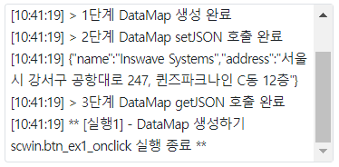
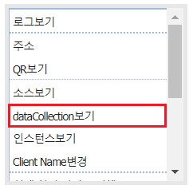
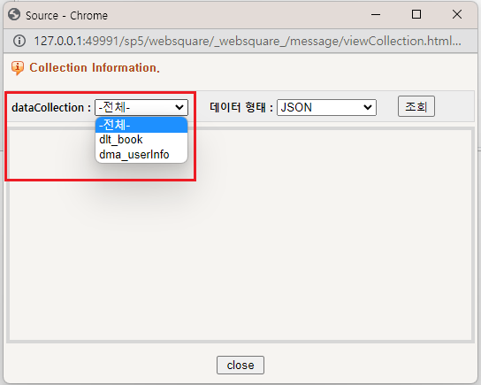
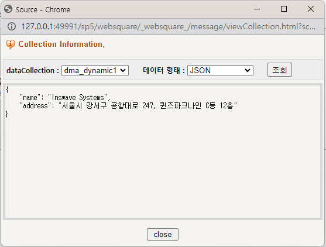
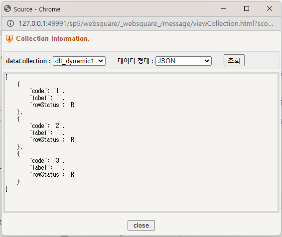

동적으로 DataMap, DataList를 생성하는 예제입니다.
DataMap 생성하기
DataList 생성하기
이 예제는 예제 화면의 영역 [로그 확인]의 textarea에 실행 결과 값이 출력됩니다.
그림 1.로그 출력 영역 참고 이미지

브라우저의 버튼 DataMap 생성하기의 하단 영역에서 [Ctrl] 키를 누른 채 마우스 오른쪽 버튼을 클릭합니다.
아래의 이미지와 같이 컨텍스트 메뉴가 노출됩니다. [dataCollection보기] 메뉴를 클릭합니다.

DataCollection을 확인할 수 있는 팝업이 생성됩니다.
아래는 실행된 이미지 예시입니다.

확인 방법은 DataCollection 확인 하기에 설명되어있습니다.
화면의 버튼을 클릭하기 전인 경우 두개의 데이터 객체(dlt_book, dma_userInfo)가 생성되어있습니다.
로그 출력창에 실행 단계 로그가 출력됨을 확인합니다.
[로그 예시]
[10:44:27] ** [실행1] - DataMap 생성하기 scwin.btn_ex1_onclick 실행 시작 **
[10:44:27] > 1단계 DataMap 생성 완료
[10:44:27] > 2단계 DataMap setJSON 호출 완료
[10:44:27] {"name":"Inswave Systems","address":"서울시 강서구 공항대로 247, 퀸즈파크나인 C동 12층"}
[10:44:27] > 3단계 DataMap getJSON 호출 완료
[10:44:27] ** [실행1] - DataMap 생성하기 scwin.btn_ex1_onclick 실행 종료 **
확인 방법은 DataCollection 확인 하기에 설명되어있습니다.
dataCollection 목록에 dma_dynamic1이 추가되었음을 확인합니다.
아래의 이미지와 같이 dma_dynamic1을 선택하고 버튼 [조회]를 클릭하여 할당된 데이터를 확인합니다.

확인 방법은 DataCollection 확인 하기에 설명되어있습니다.
화면의 버튼을 클릭하기 전인 경우 두개의 데이터 객체(dlt_book, dma_userInfo)가 생성되어있습니다.
로그 출력창에 실행 단계 로그가 출력됨을 확인합니다.
[로그 예시]
[10:45:30] ** [실행2] - DataList 생성하기 scwin.btn_ex2_onclick 실행 시작 **
[10:45:30] > 1단계 DataList 생성 완료
[10:45:30] > 2단계 DataList setJSON 호출 완료
[10:45:30] [{"code":"1","label":"","rowStatus":"R"},{"code":"2","label":"","rowStatus":"R"},{"code":"3","label":"","rowStatus":"R"}]
[10:45:30] > 3단계 DataList getAllJSON 호출 완료
[10:45:30] ** [실행2] - DataList 생성하기 scwin.btn_ex2_onclick 실행 종료 **
확인 방법은 DataCollection 확인 하기에 설명되어있습니다.
dataCollection 목록에 dlt_dynamic1이 추가되었음을 확인합니다.
아래의 이미지와 같이 dlt_dynamic1을 선택하고 버튼 [조회]를 클릭하여 할당된 데이터를 확인합니다.

데이터 객체의 옵션을 JSON으로 할당한 예시입니다.
var jsnOption; //DataMap 속성 정의 jsnOption = { "id" : "dma_dynamic1", //생성할 DatMap의 ID입니다. "type" : "dataMap", //생성할 데이터객체의 타입입니다. dataMap 고정. "option" : { "baseNode":"map" }, "keyInfo" : [ { "id" : "name", "name" : "성명", "dataType" : "text" },{ "id" : "address", "name" : "주소", "dataType" : "text" } ] }; //1. DataCollection 생성하기 $p.data.create(jsnOption); //2. 생성된 객체에 Data 할당하기 //옵션에 적용한 id로 직접 접근이 가능합니다. dma_dynamic1.setJSON({ "name" : "Inswave Systems", "address" : "서울시 강서구 공항대로 247, 퀸즈파크나인 C동 12층" }); /* //또는 아래와 같이 $p.getComponentById API로 객체를 반환 받아 제어할 수 있습니다. let cmpDataMap = $p.getComponentById("dma_dynamic1"); cmpDataMap.setJSON({ "name" : "Inswave Systems", "address" : "서울시 강서구 공항대로 247, 퀸즈파크나인 C동 12층" }); */
데이터 객체의 옵션을 JSON으로 할당한 예시입니다.
var jsnOption; //DataList 속성 정의 jsnOption = { "id" : "dlt_dynamic1", //생성할 DatList의 ID입니다. "type" : "dataList", //생성할 데이터객체의 타입입니다. dataList 고정. "option" : { "baseNode": "list", "repeatNode": "map" }, "columnInfo" : [ { "id" : "code", "name": "코드", "dataType" :"text" }, { "id" :"label", "name" : "코드명", "dataType" :"text" } ] }; //1. DataCollection 생성하기 $p.data.create(jsnOption); //2. 생성된 객체에 Data 할당하기 //옵션에 적용한 id로 직접 접근이 가능합니다. dlt_dynamic1.setJSON([ {"lable" : "소설", "code" : "1"}, {"lable" : "인문", "code" : "2"}, {"lable" : "자기계발", "code" : "3"} ]); /* //또는 아래와 같이 $p.getComponentById API로 객체를 반환 받아 제어할 수 있습니다. let cmpDataList = $p.getComponentById("dlt_dynamic1"); cmpDataList.setJSON([ {"lable" : "소설", "code" : "1"}, {"lable" : "인문", "code" : "2"}, {"lable" : "자기계발", "code" : "3"} ]); */